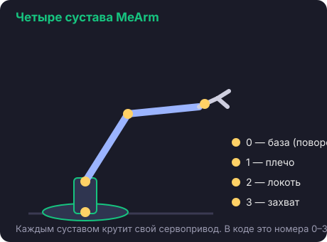

Урок 3 · сборка
Основание
Цель урока
Собрать основание робота и поворотный сустав (сустав №0 — «база»).

🛠️ Шаги сборки
- Центрируй серво базы в 90° (урок 2) — это серво №0.
- Собери нижнюю платформу основания по официальной инструкции
(фото-гайд MeArm).
- Закрепи серво базы в основании винтами из набора.
- Надень на серво качалку и верхнюю площадку так, чтобы она смотрела
прямо вперёд (серво в 90° = середина поворота).
- Прикрути качалку маленьким винтом.
⚠️ Не крути рукой
Собранный сустав не проворачивай силой — это испортит шестерёнки. Двигать будем кодом.
💡 Зачем именно «вперёд»
База в 90° смотрит прямо. Тогда в коде угол 0 — поворот в одну сторону, 180 — в другую,
90 — прямо. Логично и предсказуемо.
✅ Проверка
Основание устойчиво стоит, серво базы закреплено, верхняя площадка смотрит вперёд.